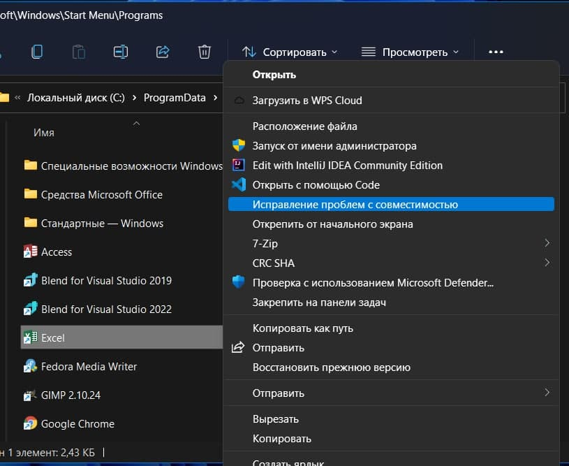

Для решения проблемы можно попытаться воспользоваться утилитой устранения неполадок совместимости Windows. Для его запуска, нажмите правой кнопкой мыши на ярлыке, запускающей табличный процессор, и выберите "Исправление проблем с совместимостью."
В появившемся окне выберите параметр "Использовать рекомендованные параметры. Windows сам настроит запуск программы и, скорее всего, это устранит проблему."
Иногда автоматические параметры не подходят. В таком случае можно использовать ручную настройку. Для этого на предыдущем окне выберите пункт "Диагностика программы" и проследуйте инструкциям и ответьте на вопросы. Ниже представлен пример окна, которое у вас появится.